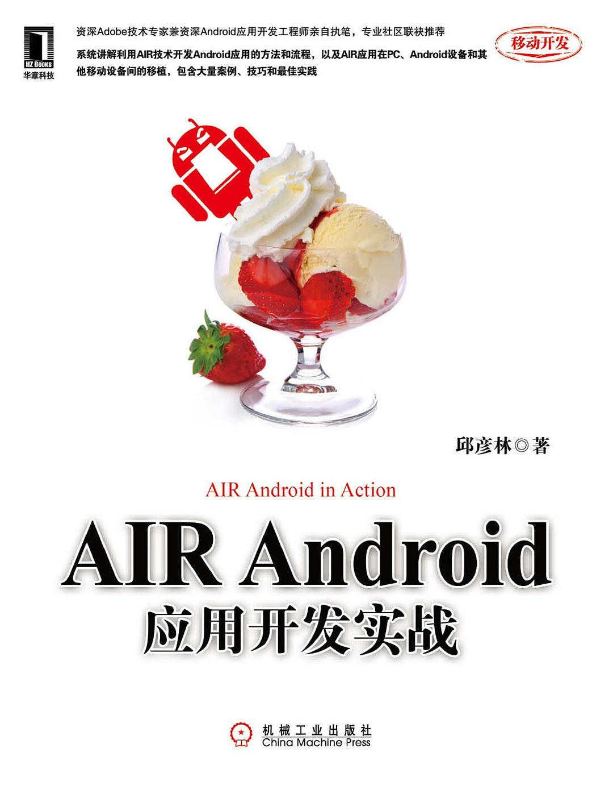

做过什么
2018 - 至今，从事算法、大数据相关的技术开发。
2012 - 2017 年，主要从事 iOS、Android 开发，具体为移动图像处理领域，并开始接触深度学习。
2003 - 2012 年，主要从事 Flash 开发、WEB 开发。
有三年以上互联网外企工作经历，创业2年。
正在做
互联网＋行业；
管理算法团队，主要聚焦在自然语言处理、知识图谱、数据分析、视觉分析等领域；
负责大数据技术的应用开发。
开源项目
libtorch yolov3
2018 年，基于 libtorch 用 C++ 实现了 YOLOV3 算法模型。
编写并没有用太长时间，关键代码大概花了不到 2 周，主要是前期花了大量时间了解 YOLOV3 的原理。经过这个项目，对视觉分析领域的算子有了更深刻的了解。
as3-pdfreader
2010年，遥远的 Flash 时代，使用 ActionScript 编写的 PDF 文件解析器。
作品
